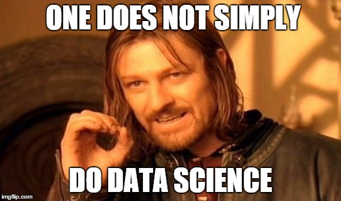

Introdução à Ciência de dados no R
Workshop - Universidade Federal da Bahia
2025-01-07
Sobre mim
Antonio Vin√≠cius Barbosa üëã
- Doutor em Economia pelo PIMES/UFPE e Universitat Pompeu Fabra.
- Professor do Departamento de Economia da Universidade Federal da Paraíba.
- Professor do Programa de Pós-graduação em Economia (PPGE/UFPB).
- Pesquisador do LEMA (Laboratório de Economia e Modelagem Aplicada).
O que é Ciência de Dados?
O que é Ciência de Dados?
A Ciência de Dados é a área de estudo dos dados desde seu processo de captura, transformação, análise e, posteriormente, da geração de informações e conhecimento para empresas, para o setor público e para mundo dos negócios.
O fluxo da Ciência de Dados
Adaptado de Alfred Reinold Baudisch
O que NÃO é Ciência de Dados?
O que NÃO é Ciência de Dados?
Informações descontextualizadas não configuram o campo da Ciência de Dados, pois não geram conhecimento relevante.
O que NÃO é Ciência de Dados?
Replicar códigos e análises de outras fontes não o faz um Cientista de Dados. É necessário dominar um conjunto de técnicas e ter conhecimento teórico do assunto.
O que NÃO é Ciência de Dados?
É de fundamental importância a interação e a comunicação em equipe sobre os métodos e resultados para o desenvovimento da Ciência de Dados. É um campo multidisciplinar.
Ciência de Dados não é a respeito do software X ou sobre a linguagem Y…
…, mas sobre aprender a manipular dados e gerar conhecimento!
A Ciência dos Dados e os Novos Paradigmas
A Ciência dos Dados e os Novos Paradigmas
A Ciência dos Dados e os Novos Paradigmas
A Ciência dos Dados e os Novos Paradigmas

A Ciência dos Dados e os Novos Paradigmas
A Ciência dos Dados e os Novos Paradigmas
A Ciência dos Dados e os Novos Paradigmas

A OpenAI é a empresa que criou, no final de 2022, o ChatGPT.
Economia e Ciência de Dados
De onde vêm os dados?
De onde vêm os dados?
De onde vêm os dados?
De onde vêm os dados?
Observando o Airbnb
Através dos dados da plataforma do http://insideairbnb.com é possível entender, por exemplo, o efeito sobre preço de imóveis.
Observando o Airbnb
Em Barcelona, por exemplo, o preço dos alugueis e de compra dos imóveis cresceram tanto em regiões mais concentradas quanto em menos concentradas.
Dados do Uber
Informações sobre o tempo da corrida https://movement.uber.com/ informam sobre o deslocamento da população nas cidades…
Efeitos sobre Saúde
… e isso afeta saúde, produtividade, salários e o PIB dos municípios.
Por que utilizar o R?
The R Project for Statistical Computing
Por que utilizar o R?
- Software gratuito
- CRAN com mais de 10.000
- Comunidade ativa e colaborativa
- Versatilidade: manipulação de dados, modelagem estatística, gráficos
- Integrabilidade
Principais linguagens
Instalando o R

1. Acessar https://cran.r-project.org/ e clicar em 'download R'.
Instalando o R
2.Selecione o mirror (servidor onde o R está disponível para download).
Instalando o R
3. Selecionar o sistema operacional.
Instalando o R
4. Selecione a opção para instalar o R pela primeira vez
Instalando o R
5. Selecione a versão mais recente e aguarde o download
R no Windows
Interface do no Windows
Ambientes de desenvolvimento integrado (IDE)
- A forma mais conveniente de utilizar o
Ré através de uma interface gráfica através de janelas. - É possível interagir com o sistema através do , embora requeira maior conhecimento do usuário.
- O desenvolvimento de Ambientes de Desenvolvimento Integrado (IDE) tem como objetivo facilitar a interação entre o usuário e o sistema.
RStudio
RStudio é um conjunto eficiente de ferramentas integradas https://posit.co/
Instalando o RStudio
Instalando o RStudio
Instalando o RStudio
Instalando o RStudio

Ambiente do RStudio
Outras IDEs
Além do RStudio, existem outras interfaces pra utilizar o R:
Utilizando o R
Por que utilizar o R?
- Gratuito
- CRAN com mais de 20.000
- Comunidade ativa e colaborativa
- Versatilidade: manipulação de dados, modelagem estatística, gráficos
- Integrabilidade
R no Windows
Ambientes de desenvolvimento integrado (IDE)
- A forma mais conveniente de utilizar o
Ré através de uma interface gráfica através de janelas. - É possível interagir com o sistema através do
shell prompt, embora requeira maior conhecimento do usuário. - O desenvolvimento de Ambientes de Desenvolvimento Integrado (IDE) tem como objetivo facilitar a interação entre o usuário e o sistema.
RStudio
RStudio é um conjunto eficiente de ferramentas integradas https://posit.co/
RStudio
Como o R funciona?
R Básico
A forma mais simples de se utilizar o R é através de operações básicas:
Neste caso, o R executa a operação e retorna seu valor na tela.
Operações básicas
# Adicao
23 + 4
## [1] 27
# Subtracao
13 - 5
## [1] 8
# Multiplicao
9 * 7
## [1] 63
# Divisao
10/3
## [1] 3.333333
# Exponeciacao
2^5
## [1] 32
# Raiz quadrada
sqrt(16)
## [1] 4
# Arredondar
round(pi, 2)
## [1] 3.14
# Logaritmo (base e)
log(10)
## [1] 2.302585
# Logaritmo (outras bases)
log(10, 10)
## [1] 1O símbolo # é utilizado para adicionar comentários ao código.
Salvando valores em objetos
- Ao executar uma expressão seu valor é gerado, mas não armazenado.
- Uma atribuição, por outro lado, salva o valor em um objeto (ou variável).
- É, normalmente, feito através do operador especial
<- - Além do operador
<-, atribuições podem ser feitas através=
Regra de etiqueta üîñ
Na maior parte do tempo, usuários do R utilizam apenas o operador <- para atribuições, enquanto o símbolo de igualdade (=) é reservado para indicar os argumentos dentro de uma função.
Atribuições
Os objetos criados são armazenados na memória e atualizados a cada nova atribuição:
üöÄ Quizz #1
- Crie a variável
renda_dompara armazenar o valor da renda total aproximada do seu domicílio. - Agora, atribua à variável
n_pessoaso número de pessoas que moram no seu domicílio. - Calcule a renda domiciliar per capita e atribua à variável
renda_pc.
03:00
Gerenciando objetos
Para listar todos os objetos armazenados na memória, basta utilizar a função ls()
Pacotes üì¶
Pacotes no R
Um pacote é um conjunto de funções que servem para uma dada finalidade. Cada pacote possui uma documentação própria explicando sua funcionalidade e exemplos de uso.
Pacotes no R
Para instalar um pacote específico no R, fazemos:
Estruturas de dados
Veremos as principais estruturas de dados do R:
- Vetores
- Data frames
Vetores
Criando vetores
A construção de vetores (conjunto de valores) é feito através do operador c():
# Características dos participantes
idade <- c(19, 21, 23, 24)
idade
## [1] 19 21 23 24
nome <- c("Maria", "João", "Ana", "Pedro")
nome
## [1] "Maria" "João" "Ana" "Pedro"
aluno_econ <- c(TRUE, FALSE, TRUE, FALSE)
aluno_econ
## [1] TRUE FALSE TRUE FALSE
nota <- c(8.26, 7.18, 8.02, 7.33)
nota
## [1] 8.26 7.18 8.02 7.33Classes
Para determinar a classe de um vetor, utilizamos a função class()
As classes definem a forma de armazenamento na memória. Por exemplo, um vetor de números inteiros requer menos espaço de armazenamento do que os vetores numéricos.
Combinando vetores
Ao combinar dois vetores de classes distintas, o R converte os elementos para torná-los comparáveis:
O novo vetor é formado unicamente por caracteres. Portanto, vetores no R são formado com elementos de uma única classe (homogêneos).
Operação com vetores
Considere o vetor cra. Podemos fazer algumas operações básicas, tais como:
Operação com vetores
A função summary() apresenta um conjunto de estatísticas básicas sobre um vetor:
Para obter o tamanho de um vetor, utilizamos a função length():
Outras operações com vetores
Operação com vetores
Outras operações básicas com vetores:
Operação com vetores
Algumas destas operações não funcionam quando existem elementos faltantes (representados por NA)
Neste caso, devemos remover os dados faltantes da seguinte forma:
Regras de Etiqueta üîñ (2)
- Nome de objetos em minúsculo
- Utilize
_para separar palavras no nome dos objetos - Evite separar por . ou utilizar o formato
CamelCase - Use nomes informativos para os objeto
- Não faça reuso do nome dos objetos em uma mesma análise
Sequências
O R possui algumas funcionalidades para gerar sequências numéricas:
Operações lógicas
O R possui dois valores lógicos, TRUE e FALSE. Os operadores de comparação entre dois objetos são:
==igual
!=diferente<menor que>maior que<=menor ou igual que>=maior ou igual que
Operações lógicas
Seguem alguns exemplos de como são feitas as comparações entre dois valores:
Selecionando elementos em um vetor
Para selecionar um ou mais elementos de um vetor, utilizamos o operador [ ]
Selecionando elementos em um vetor
Para exluir elementos do vetor, utilizamos o sinal - antes do indexador da posição
Selecionando elementos em um vetor
Podemos utilizar operações lógicas para selecionar elementos em um vetor
Regras de Etiqueta üîñ (3)
Espaçamento
- É uma boa prática colocar um espaço antes e depois de cada operador fixo (
=,+,-,<-, etc) - Sempre coloque um espaço após a vírgula e nunca antes (como no português escrito).
üöÄ Quizz #2
Considere o vetor lista_vegana <- c("maca", "banana", "laranja", "kiwi", "batata", "brocolis")
- Quantos elementos o vetor
lista_veganapossui? - Qual a classe do vetor?
- Selecione o elemento
laranja - Selecione apenas os vegetais utilizando a condição
| - Exclua o elemento
kiwibaseado na sua posição no vetor - Adicione
tomateao vetor.
05:00
Data Frames
Data frames
Um data frame é uma das estruturas mais importantes para armazanamento de dados. Equivale, de certa forma, às planilhas eletrônicas com linhas e colunas.
- Um data frame é um conjunto de vetores de mesmo tamanho;
- Cada linha representa informações para uma única unidade de observação
- Cada coluna representa uma característica observada das unidades;
- Elementos da mesma coluna devem ser do mesma classe.
Data frames
É possível criar, carregar (dados dos pacotes) ou ler arquivos diretamente no R. Para criar um data frame, fazemos:
alunos_ufpb <- data.frame(
aluno = c("José", "Maria", "Pedro", "Carla", "Isabel"),
economia = c(1, 0, 0, 1, 1),
periodo = c(3, 4, 7, 2, 3),
cra = c(7.34, 8.45, 8.05, 7.98, 9.03)
)
alunos_ufpb
## aluno economia periodo cra
## 1 José 1 3 7.34
## 2 Maria 0 4 8.45
## 3 Pedro 0 7 8.05
## 4 Carla 1 2 7.98
## 5 Isabel 1 3 9.03Data frames
Para carregar dados dos pacotes, fazemos:
#install.packages("dados")
head(dados::dados_gapminder)
## # A tibble: 6 × 6
## pais continente ano expectativa_de_vida populacao pib_per_capita
## <fct> <fct> <int> <dbl> <int> <dbl>
## 1 Afeganistão Ásia 1952 28.8 8425333 779.
## 2 Afeganistão Ásia 1957 30.3 9240934 821.
## 3 Afeganistão Ásia 1962 32.0 10267083 853.
## 4 Afeganistão Ásia 1967 34.0 11537966 836.
## 5 Afeganistão Ásia 1972 36.1 13079460 740.
## 6 Afeganistão Ásia 1977 38.4 14880372 786.Data frames
Algumas características dos dados:
# Estrutura dos dados
str(dados::dados_gapminder)
## tibble [1,704 × 6] (S3: tbl_df/tbl/data.frame)
## $ pais : Factor w/ 142 levels "Afeganistão",..: 1 1 1 1 1 1 1 1 1 1 ...
## $ continente : Factor w/ 5 levels "África","Américas",..: 3 3 3 3 3 3 3 3 3 3 ...
## $ ano : int [1:1704] 1952 1957 1962 1967 1972 1977 1982 1987 1992 1997 ...
## $ expectativa_de_vida: num [1:1704] 28.8 30.3 32 34 36.1 ...
## $ populacao : int [1:1704] 8425333 9240934 10267083 11537966 13079460 14880372 12881816 13867957 16317921 22227415 ...
## $ pib_per_capita : num [1:1704] 779 821 853 836 740 ...
# Listar variaveis
names(dados::dados_gapminder)
## [1] "pais" "continente" "ano"
## [4] "expectativa_de_vida" "populacao" "pib_per_capita"Introdução à Ciência de dados no R